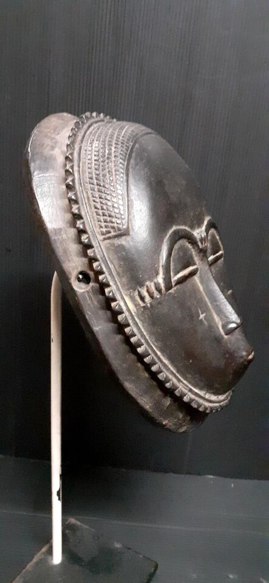
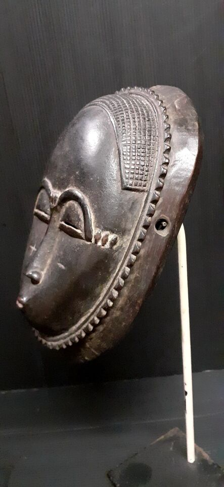
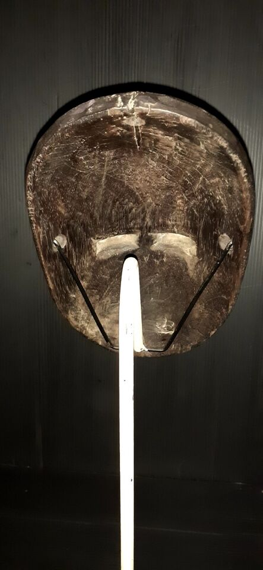
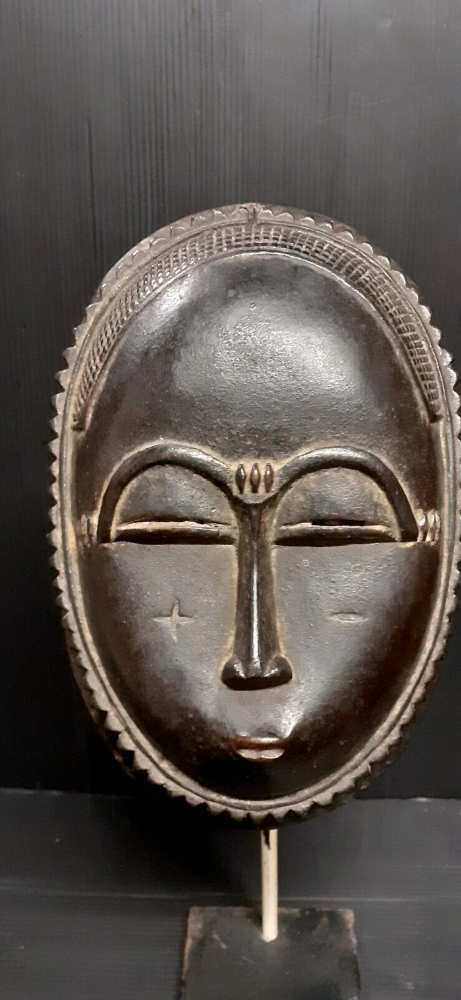
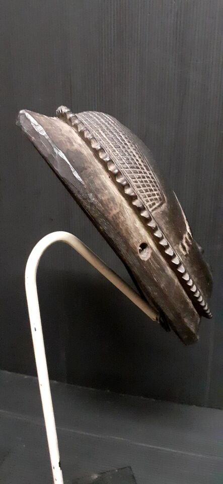

Historique masque Baoulé
Prix : 350 €






Nom: Masque Baoulé
Hauteur: 20 cm
Ethnie: Baoulé
Pays d'origine: Côte d'ivoire
Zone de collecte: Yamoussoukro
Matière: Bois
Prix: 350 €
Les masques Mblo utilisés dans les danses de divertissement sont l'une des formes les plus anciennes de l'art Baoulé. Ces masques antropomorphes sont généralement le portrait d'un individu en particulier. Le Mblo incarne plus que tout autre masque, les fondements de l'esthétique Baoulé et ils semblent avoir existé depuis toujours. Les surfaces sont lisses, courbes, bien lustrées suggérant une peau saine, mettant en valeur la coiffure ou les scarifications. Le front est haut, symbolisant l'intelligence et les yeux baissés le respect du monde environnant... Mblo est le nom d'une catégorie de spectacle qui utilise ces masques faciaux en danses solo ou parodiques. Le déroulement du spectacle est très structuré et fait appel à un "script" dont les noms peuvent être très connus (Kpan Kpan, GbaGba..). Ce script évolue et est réécrit régulièrement toutes les deux ou trois générations. D'après le livre de S. Vogel "L'art Baoulé".
Les masques baoulé, issus de la culture du peuple Baoulé en Côte d'Ivoire, jouent un rôle fondamental dans les traditions spirituelles, sociales et artistiques. Utilisés principalement dans des contextes rituels et cérémoniels, ils incarnent des valeurs culturelles profondes et servent de lien entre le monde des vivants et celui des ancêtres ou des esprits. Les masques baoulé sont souvent associés aux cultes des ancêtres et des esprits. Ils sont utilisés pour invoquer des protections, favoriser la prospérité ou demander des bénédictions. Certains masques, comme le Goli, sont particulièrement employés lors des funérailles ou des fêtes célébrant la vie et la mémoire des défunts. Ces masques représentent des forces surnaturelles censées protéger la communauté contre les forces négatives. Au-delà de leur rôle spirituel, les masques baoulé sont des instruments de régulation sociale. Les danseurs masqués interviennent pour instruire, corriger ou transmettre des messages importants à la communauté. Ils jouent également un rôle dans l'éducation des jeunes générations, en leur inculquant les valeurs et les traditions baoulé. Les masques baoulé, souvent en bois sculpté, sont remarquables par leur finesse et leur esthétique. Ils intègrent des éléments symboliques, comme des motifs d'animaux ou des formes humaines idéalisées, reflétant des qualités spécifiques telles que la force, la sagesse ou la beauté. Les performances accompagnant ces masques sont généralement rythmées par des chants et des tambours, renforçant leur caractère sacré et spectaculaire. Ainsi, les masques baoulé ne sont pas de simples objets d’art, mais des outils vivants qui unissent esthétique, spiritualité et organisation sociale dans la culture baoulé.